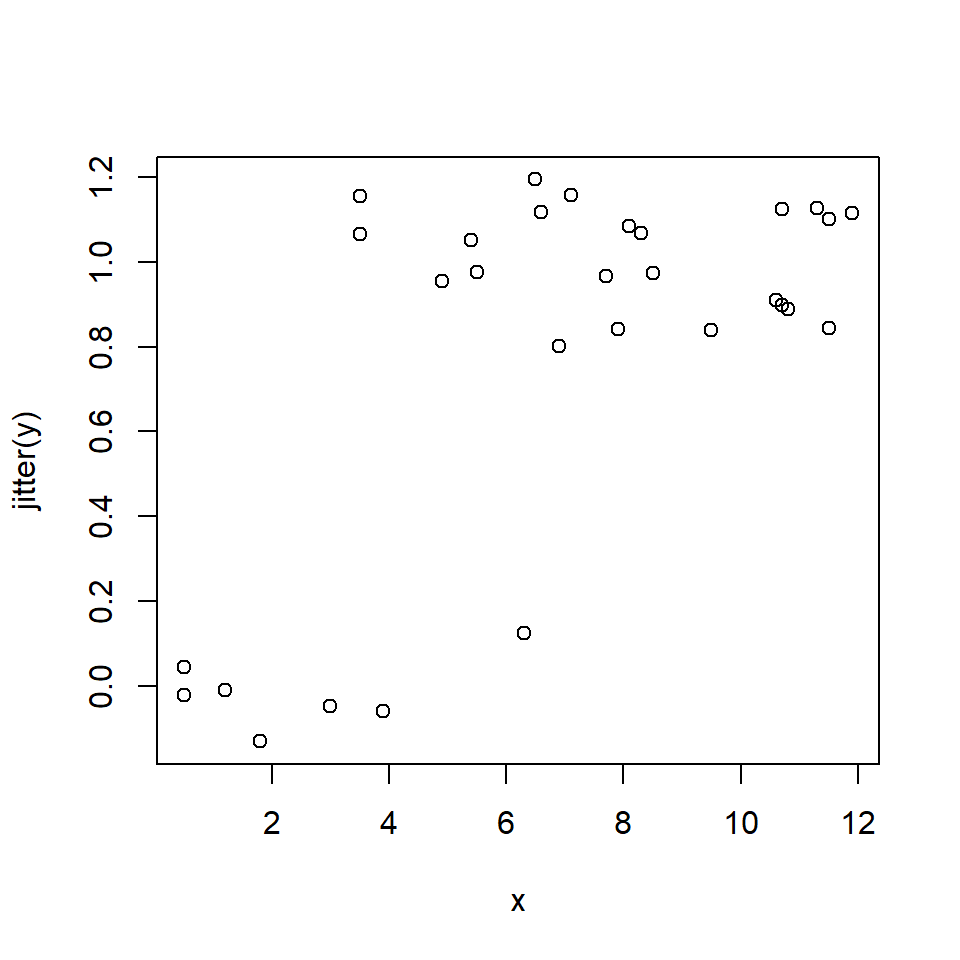
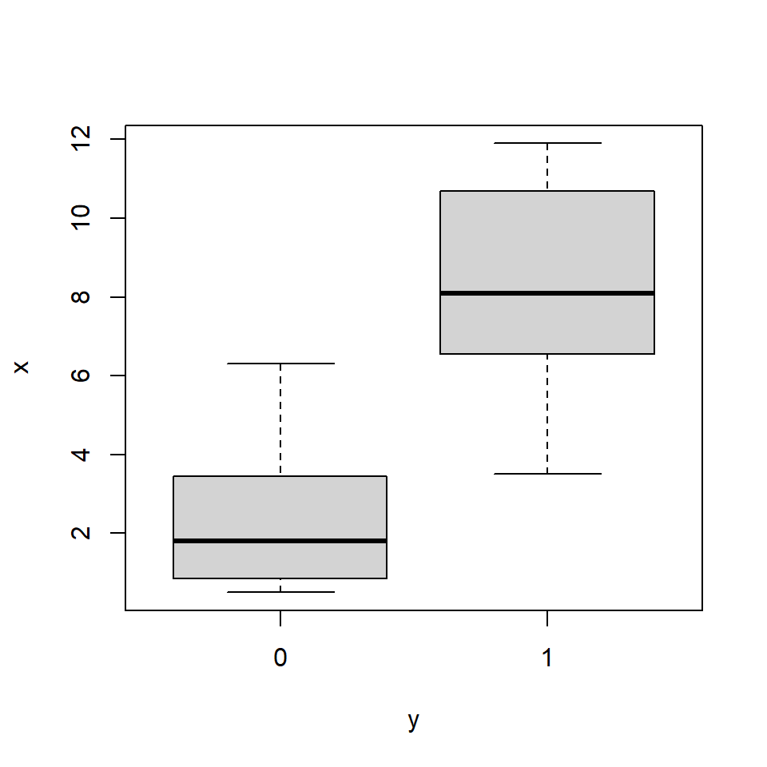
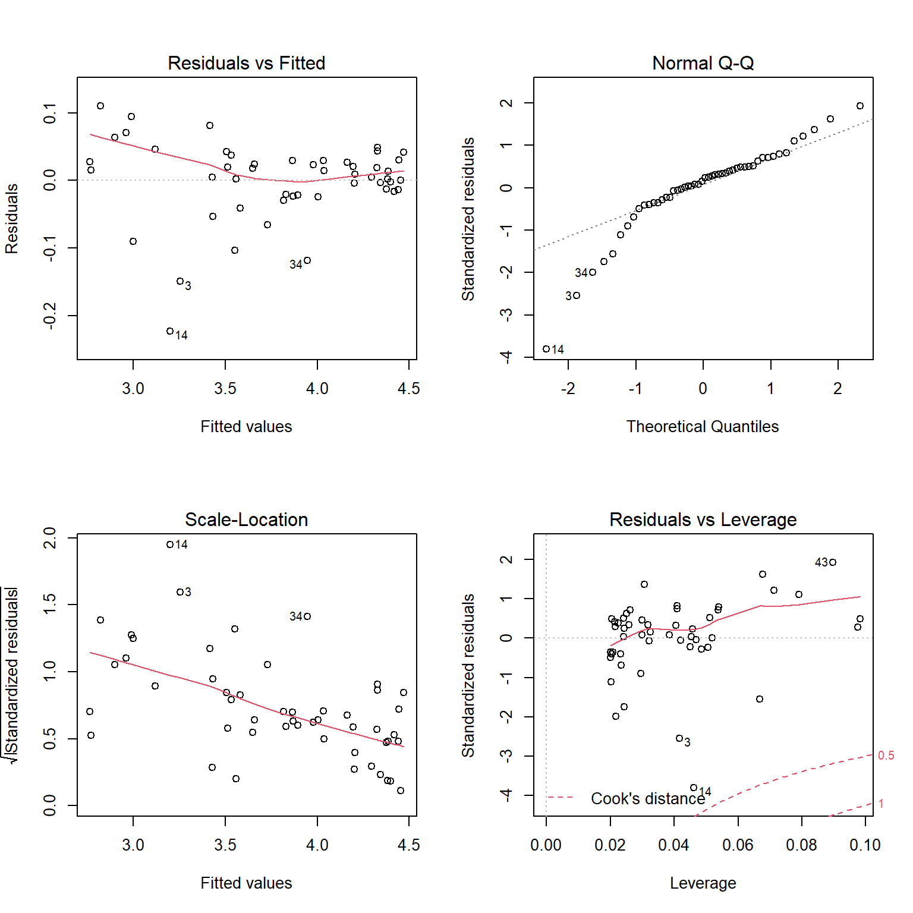
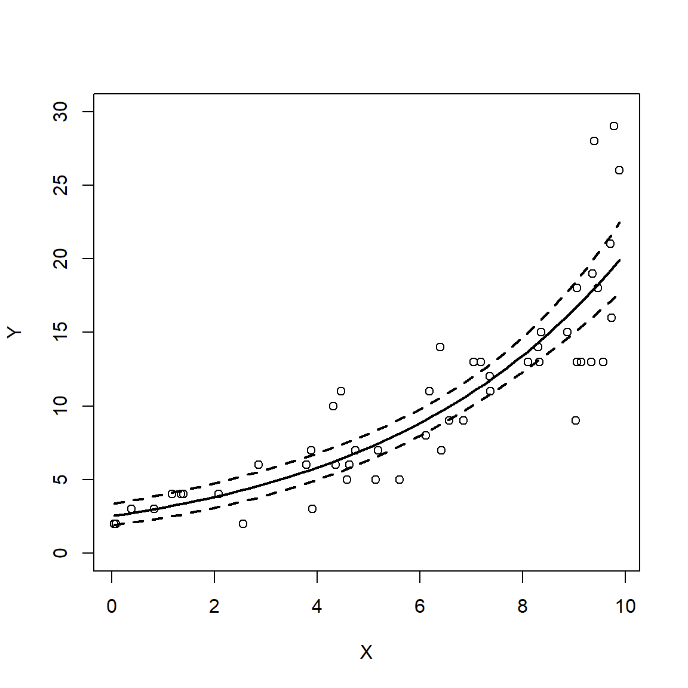

5.6 Logistic regression for binary outcomes
This section explores GLMs for binary outcomes. Binary outcomes are results that take one of two values: survival vs. non-survival, presence vs. absence, reproduction vs. not-reproducing, and so on. These data are usually coded as 1 and 0: 1 when the event occurs, and 0 when the event does not. No other values are allowed. The standard technique for modeling binary outcomes is logistic regression. This name refers to a GLM with a binomial family and logit link function.
Logistic regression is a technique for modeling the probability of a binary outcome: survival vs. death, reproductive vs. not reproductive, present vs. absent, etc. The response variable Y takes value 1 when the event occurs, and value 0 when the event does not occur. For each observation i, success occurs as the outcome of a Bernoulli trial with probability pi. The logit of pi (i.e., the logarithm of the odds that Y = 1) is modeled as a linear function of the predictor variables.
\[Y_i \sim Bernoulli\left(p_i\right)\] \[logit\left(p_i\right)=\log{\left(\frac{p_i}{1-p_i}\right)}=\beta_0+\beta_1X_i\]
The inverse link function is the logistic function, which is also where the name “logistic regression” comes from:
\[logistic\left(x\right)=\frac{e^x}{1+e^x}\]
The linear predictor in logistic regression predicts the “log-odds” of an event occurring. The unit of the log-odds scale is the logistic unit, or logit. The logit link function is useful because it allows the outcome of a linear function–which can take on any real value–to be mapped smoothly to the natural domain of probabilities, the open interval (0, 1). A key consequence of this link function is that increasing the value of one of the predictor variables by 1 will scale the log-odds by a constant. That constant is the coefficient estimated for the predictor.
The logistic regression model was developed in the 1940s, decades before the GLM was first proposed. Part of the development of the idea of the GLM was recognizing that many previously known models were actually special cases of a more general model. In GLM terms, we say that logistic regression is a GLM with a binomial family and logit link function.
5.6.1 Example with simulated data
As with the other GLM applications, we’ll start by simulating a suitable dataset and analyzing it. The code below will execute the simulation. Remember to set the random number seed for reproducibility.
set.seed(123)
n <- 30
x <- round(runif(n, 0, 12), 1)
# coefficients
beta0 <- -4
beta1 <- 0.8
# linear predictor
eta <- beta0 + beta1 * x
# logistic function (inverse link)
prob <- plogis(eta)
# draw y values (stochastic part)
y <- rbinom(n, 1, prob)
# assemble dataset
dat <- data.frame(x=x, y=y)
# take a look at the data:
head(dat)## x y
## 1 3.5 1
## 2 9.5 1
## 3 4.9 1
## 4 10.6 1
## 5 11.3 1
## 6 0.5 0Unlike other sorts of regression problems, plotting Y vs. X isn’t very illuminating:
plot(x, y)
If you have a lot of duplicate coordinates, it can be hard to get a sense of how many 0s and 1s are in the dataset. The scatterplot above is also a little silly because most of the Y-axis range is not occupied. We can use function jitter() to add some random noise to the Y-values; this will help us see what is going on.
plot(x, jitter(y))
Another way to explore binary data is with a boxplot. A boxplot can show whether X tends to be smaller or greater when Y = 1; this is sort of the reverse of the question we are really asking, but it helps us make sense of the data as we explore.
boxplot(x~y)
The boxplot agrees with the scatterplot: Y seems more likely to occur at greater values of X. Making the boxplot horizontal makes the agreement more clear:
boxplot(x~y, horizontal=TRUE)
Logistic regression is fit using the glm() function. By definition, logistic regression is a GLM with a binomial family and logit link function. You don’t need to specify the link function in R, as the binomial family uses the logit link function by default.
mod1 <- glm(y~x, data=dat, family=binomial)
summary(mod1)##
## Call:
## glm(formula = y ~ x, family = binomial, data = dat)
##
## Deviance Residuals:
## Min 1Q Median 3Q Max
## -2.25927 0.02705 0.06648 0.29492 1.30865
##
## Coefficients:
## Estimate Std. Error z value Pr(>|z|)
## (Intercept) -3.7713 1.8349 -2.055 0.0399 *
## x 0.9909 0.4001 2.477 0.0133 *
## ---
## Signif. codes: 0 '***' 0.001 '**' 0.01 '*' 0.05 '.' 0.1 ' ' 1
##
## (Dispersion parameter for binomial family taken to be 1)
##
## Null deviance: 32.596 on 29 degrees of freedom
## Residual deviance: 13.193 on 28 degrees of freedom
## AIC: 17.193
##
## Number of Fisher Scoring iterations: 7The parameter estimates are pretty close to the correct values. We can calculate the pseudo-R2 as usual:
1-mod1$deviance/mod1$null.deviance## [1] 0.5952722The pseudo-R2 is pretty good for only having 30 observations. But, you should probably consider using AUC instead of pseudo-R2 (see below). The next step is to generate and plot the model predictions. For logistic regression models, predictions should be calculated on the link scale and back-transformed to get probabilities.
# values for prediction
use.n <- 50
px <- seq(min(dat$x), max(dat$x), length=use.n)
# calculate predictions and 95% CI (link scale)
pred <- predict(mod1, newdata=data.frame(x=px),
type="link", se.fit=TRUE)
mn <- pred$fit
lo <- qnorm(0.025, mn, pred$se.fit)
up <- qnorm(0.975, mn, pred$se.fit)
# inverse link function to get probabilities
mn <- mod1$family$linkinv(mn)
lo <- mod1$family$linkinv(lo)
up <- mod1$family$linkinv(up)Now make the plot. The argument xpd=NA to points() makes sure that all points are plotted, even those that fall outside of the plot area. This is needed because plot() defines the plot area using the maximum Y value (1), but some of the jittered Y values will be <0 or > 1 and thus won’t get plotted. We’ll use a polygon instead of the usual lines to show the 95% CI of the predicted probability.
par(mfrow=c(1,1), mar=c(5.1, 5.1, 1.1, 1.1),
bty="n", las=1, lend=1, cex.axis=1.3,
cex.lab=1.3)
plot(dat$x, dat$y, type="n", xlab="X",
ylab="p(Y)", ylim=c(0, 1), xlim=c(0, 12))
polygon(x=c(px, rev(px)),
y=c(lo, rev(up)), # REVerse either upper or lower
border=NA, col="grey80")
points(px, mn, type="l", lwd=3)
points(dat$x, jitter(dat$y, amount=0.05),
cex=1.1, xpd=NA)
5.6.2 Example with real data
Bubrig et al. (2020) studied the influence of bacteria on the emergence of nematodes (Caenorhabditis elegans) from their dormant state. C. elegans sometimes enter a dormant state called a dauer that permits larvae to survive long periods of adverse conditions and to disperse long distances by passive transportation. The figure below shows the place of the dauer state in the normal C. elegans life cycle (Bubrig et al. 2020). Previous work had shown that successful colonization of new habitats by C. elegans is heavily influenced by the nearby bacterial community. The authors investigated whether the bacterial community could affect the emergence of individual worms from their dormant state.

In their experiment, they inoculated plates with one of three strains of C. elegans and one of five species of bacteria (or no bacteria as a control). After some time, the plates were treated with a chemical known to kill worms not in the dauer stage. The researchers then surveyed the plates and recorded each dead worm (which had emerged) as 1 and each worm still in dauer state (i.e., not emerged) as 0.
Download the dataset bubrig_2020_data.csv and put it in your R working directory.
in.name <- "bubrig_2020_data.csv"
dat <- read.csv(in.name, header=TRUE)
head(dat)## trial repl strain treat dose y categ
## 1 1 1 N2 Control 418.3225 1 Control
## 2 1 1 N2 Control 418.3225 1 Control
## 3 1 2 N2 Control 418.3225 1 Control
## 4 1 3 N2 Control 418.3225 1 Control
## 5 1 3 N2 Control 418.3225 1 Control
## 6 1 3 N2 Control 418.3225 1 ControlWe suspect that the response variable y is related to the predictors strain (of worm) and treat (“treatment” of bacteria). Both of these predictor variables are factors, so scatterplots won’t be very helpful. Instead, we can try some methods for visualizing categorical data. The function mosaicplot() produces a plot that partitions the observations by different combinations of factors61:
mosaicplot(strain~y, data=dat, color=TRUE)
mosaicplot(treat~y, data=dat, color=TRUE)
Observations can be split by an arbitrary number of factors:
mosaicplot(strain~treat+y, data=dat, color=TRUE) 
mosaicplot(treat~strain+y, data=dat, color=TRUE)
As you might have guessed, mosaic plots are a graphical way of representing a contingency table. Mosaic plots are great tools for data exploration, but don’t often make it into publications because they use a great deal of space and ink relative to the amount of information they convey. The equivalent contingency tables can be seen with the commands below:
ftable(y~strain, data=dat)## y 0 1
## strain
## CB4856 3925 2527
## JU1395 3007 3890
## N2 3755 1967ftable(y~treat, data=dat)## y 0 1
## treat
## Control 1662 1051
## EColi 1539 1254
## Providencia 1533 1408
## Pseudomonas 1735 1260
## Raoultella 1973 1639
## Serratia 2245 1772ftable(y~strain+treat, data=dat)## y 0 1
## strain treat
## CB4856 Control 681 330
## EColi 548 406
## Providencia 571 324
## Pseudomonas 559 337
## Raoultella 752 506
## Serratia 814 624
## JU1395 Control 518 530
## EColi 490 541
## Providencia 375 750
## Pseudomonas 519 593
## Raoultella 594 780
## Serratia 511 696
## N2 Control 463 191
## EColi 501 307
## Providencia 587 334
## Pseudomonas 657 330
## Raoultella 627 353
## Serratia 920 452Because we have a binary response variable, our first option should be logistic regression. Notice that we still call this model logistic “regression” even though there are no continuous predictors. Another name might be a “Binomial ANOVA”, in the same way that a regular ANOVA is just a special case of linear models. Just as we did in the Poisson regression examples, we will fit several models with different predictors and compare their efficacy using information theoretic methods.
For this example, we’re going to define model formulas ahead of time and fit the models in a loop. This is because the code for each model differs only in one part, the formula. Having the formulas in a separate vector and the models in a list will also make it easier to construct the AIC table for model selection. To match the original analysis done by Bubrig et al. (2020), we should treat strain N2 as the baseline. To do this, we need to re-specify the factor strain.
# convert to factor if not already
class(dat$strain)## [1] "character"# if "character", run next line:
dat$strain <- as.factor(dat$strain)
dat$strain <- relevel(dat$strain, ref="N2")Now we define the model formulas and fit the models.
# define some model formulas
forms <- c("y~strain", "y~treat",
"y~strain+treat", "y~strain*treat")
# make a list to hold models
mlist <- vector("list", length(forms))
# fit models in a loop
for(i in 1:length(forms)){
mlist[[i]] <- glm(forms[i], data=dat, family=binomial)
}Constructing the AIC table is made easy; all we have to do is pull AIC values from the list. Compare this to the method in the previous section, where we had to type out each model’s name.
# construct AIC table
aicdf <- data.frame(mod=1:length(forms),
form=forms,
aic=sapply(mlist, AIC))
# calculate AIC weights
aicdf <- aicdf[order(aicdf$aic),]
aicdf$delta <- aicdf$aic - min(aicdf$aic)
aicdf$wt <- exp(-0.5*aicdf$delta)
aicdf$wt <- aicdf$wt/sum(aicdf$wt)
aicdf <- aicdf[order(-aicdf$wt),]
aicdf$cumsum <- cumsum(aicdf$wt)
aicdf## mod form aic delta wt cumsum
## 4 4 y~strain*treat 25356.38 0.00000 1.000000e+00 1
## 3 3 y~strain+treat 25400.32 43.93681 2.879002e-10 1
## 1 1 y~strain 25457.15 100.76847 1.313424e-22 1
## 2 2 y~treat 26114.37 757.98983 2.538633e-165 1The AIC table suggests that the model with an interaction is by far the most likely to be the best-fitting model of these four. In a publication, the AIC weight for model 4 should be reported as > 0.9999 and the other models as <0.0001, not the values shown here (the printed AIC = 1 for model 4 cannot be correct if any other model has a weight > 0; there is an R precision issue here). Let’s check the summary table and see if that is reasonable. We should also compare the summary table to the mosaic plots. The command below shows another advantage of keeping models in a list: we can call models by their position in the ordered AIC table.
summary(mlist[[aicdf$mod[1]]])##
## Call:
## glm(formula = forms[i], family = binomial, data = dat)
##
## Deviance Residuals:
## Min 1Q Median 3Q Max
## -1.482 -1.014 -0.894 1.168 1.569
##
## Coefficients:
## Estimate Std. Error z value Pr(>|z|)
## (Intercept) -0.88545 0.08600 -10.296 < 2e-16 ***
## strainCB4856 0.16098 0.10906 1.476 0.139917
## strainJU1395 0.90836 0.10589 8.578 < 2e-16 ***
## treatEColi 0.39570 0.11247 3.518 0.000434 ***
## treatProvidencia 0.32157 0.10997 2.924 0.003453 **
## treatPseudomonas 0.19686 0.10931 1.801 0.071700 .
## treatRaoultella 0.31098 0.10873 2.860 0.004237 **
## treatSerratia 0.17476 0.10342 1.690 0.091047 .
## strainCB4856:treatEColi 0.02885 0.14641 0.197 0.843775
## strainJU1395:treatEColi -0.31958 0.14267 -2.240 0.025092 *
## strainCB4856:treatProvidencia -0.16375 0.14639 -1.119 0.263322
## strainJU1395:treatProvidencia 0.34868 0.14110 2.471 0.013471 *
## strainCB4856:treatPseudomonas 0.02154 0.14561 0.148 0.882395
## strainJU1395:treatPseudomonas -0.08647 0.13921 -0.621 0.534473
## strainCB4856:treatRaoultella 0.01729 0.14010 0.123 0.901753
## strainJU1395:treatRaoultella -0.06146 0.13640 -0.451 0.652285
## strainCB4856:treatSerratia 0.28390 0.13426 2.115 0.034464 *
## strainJU1395:treatSerratia 0.11132 0.13381 0.832 0.405476
## ---
## Signif. codes: 0 '***' 0.001 '**' 0.01 '*' 0.05 '.' 0.1 ' ' 1
##
## (Dispersion parameter for binomial family taken to be 1)
##
## Null deviance: 26159 on 19070 degrees of freedom
## Residual deviance: 25320 on 19053 degrees of freedom
## AIC: 25356
##
## Number of Fisher Scoring iterations: 4In a typical ANOVA, the coefficients for each factor represent the difference in means from the baseline. In this logistic regression model, the coefficients represent differences in the log of the odds ratio. Recall that the link scale for logistic regression is the log of the odds ratio. The odds ratio of an event with probability p is \(p/(1-p)\). In practical terms, this describes the relative likelihood of an event occurring. For example, if the odds ratio for treatment A vs. control is 1.8, then the event is 1.8 times more likely to occur in treatment group A. Alternatively, being in treatment A increases the probability of the event by a factor of 1.8. The SE of the coefficient can be used to estimate a 95% CI of the odds ratio.
coefs <- summary(mlist[[4]])$coefficients
coefs## Estimate Std. Error z value Pr(>|z|)
## (Intercept) -0.88545363 0.08599663 -10.2963755 7.316629e-25
## strainCB4856 0.16098397 0.10906031 1.4761005 1.399169e-01
## strainJU1395 0.90835539 0.10589011 8.5782836 9.629926e-18
## treatEColi 0.39569527 0.11246670 3.5183329 4.342673e-04
## treatProvidencia 0.32156980 0.10996822 2.9242066 3.453355e-03
## treatPseudomonas 0.19686226 0.10930596 1.8010204 7.169966e-02
## treatRaoultella 0.31097514 0.10873444 2.8599508 4.237067e-03
## treatSerratia 0.17476214 0.10341550 1.6899028 9.104656e-02
## strainCB4856:treatEColi 0.02885225 0.14640819 0.1970672 8.437750e-01
## strainJU1395:treatEColi -0.31958315 0.14267199 -2.2399852 2.509188e-02
## strainCB4856:treatProvidencia -0.16374584 0.14638809 -1.1185735 2.633221e-01
## strainJU1395:treatProvidencia 0.34867562 0.14110387 2.4710563 1.347146e-02
## strainCB4856:treatPseudomonas 0.02154085 0.14561178 0.1479334 8.823953e-01
## strainJU1395:treatPseudomonas -0.08647351 0.13920564 -0.6211926 5.344729e-01
## strainCB4856:treatRaoultella 0.01729485 0.14009989 0.1234466 9.017535e-01
## strainJU1395:treatRaoultella -0.06146231 0.13640390 -0.4505905 6.522847e-01
## strainCB4856:treatSerratia 0.28389752 0.13425558 2.1146050 3.446363e-02
## strainJU1395:treatSerratia 0.11131617 0.13381251 0.8318816 4.054758e-01In our model, we have an interaction, so interpreting the coefficients is tricky. The interaction term between strain and treatment means that the effects of strain and the effects of treatment should not be interpreted by themselves. Let’s start with the coefficients in a simpler version of the model, the one without the interaction:
Let’s interpret the terms from top to bottom. The Intercept term describes the expectation for an observation with all factors at their baseline values (strain = N2, treatment = control). We can translate this to a probability using the inverse logit function:
plogis(coefs[1,1])## [1] 0.2920489So, an N2 worm in the control treatment has a 0.29 probability of emerging from dauer.
The next two coefficients, strainCB4856 and strainJU1395, describe the odds ratios of animals from the other worm strains, in the control group. The odds ratios for emerging from dauer while being in one of those strains instead of the baseline strain are obtained by exponentiating the estimates.
exp(coefs[2:3,1])## strainCB4856 strainJU1395
## 1.174666 2.480240This means that a CB4856 worm in the control treatment would be 1.17 times more likely to emerge than an N2 worm in the control group, and a JU1395 worm in the control treatment would be 2.48 times as likely to emerge as an N2 worm in the control group. The 95% CI for those odds ratios are:
exp(coefs[2:3,1]-1.96*coefs[2:3,2])## strainCB4856 strainJU1395
## 0.9485942 2.0153861exp(coefs[2:3,1]+1.96*coefs[2:3,2])## strainCB4856 strainJU1395
## 1.454616 3.052314So, within the control treatment, CB4856 worms are 1.17 times more likely to emerge, and we are 95% confident that the odds ratio is in the interval [0.948, 1.455].
The next set of coefficients, treatEColi, treatProvidencia, treatPseudomonas, treatRaoultella, and treatSerratia, are the effects of the bacterial treatments for worms in the control strain N2. So, N2 worms exposed to E. coli are 1.485 times as likely to emerge as control worms, with a 95% CI of [1.19, 1.85].
exp(coefs[4,1])## [1] 1.485417exp(coefs[4,1]-1.96*coefs[4,2])## [1] 1.191557exp(coefs[4,1]+1.96*coefs[4,2])## [1] 1.851748Now that we understand what the main effects represent, we need to understand what the main effects are not. The coefficients for the main effects (i.e., effects that are not part of the interaction) are the effects of changing one factor with the other factor held at its baseline. The main effects coefficients are NOT the overall effect of any factor. Talking about the “overall effect of a factor” or “independent effect of a factor” doesn’t even make sense in the presence of an interaction. This is because the effect of each factor affects the effects of the other. This is the definition of an interaction. In our example, the coefficient 0.16098397 estimated for strainCB4856 applies only for worms in the baseline strain, not for worms in other strains.
The interaction coefficients describe the changes in odds ratio for observations when both the strain and treatment factors are different from their baselines. For example, strainCB4856:treatEColi is the effect of worm strain CB4856 and treatment E. coli relative to worm strain N2 and the control treatment: 1.02 times, 95% CI [0.77, 1.37].
exp(coefs[9,1])## [1] 1.029273exp(coefs[9,1]-1.96*coefs[9,2])## [1] 0.7725119exp(coefs[9,1]+1.96*coefs[9,2])## [1] 1.371373We can use R to construct a table of the odds ratios for each treatment; this table can be presented as a result or used to build a figure.
coefs <- summary(mlist[[4]])$coefficients
coefs <- data.frame(coefs)
coefs <- coefs[,c(1,2,4)]
names(coefs) <- c("est", "se", "p")
coefs$strain <- "N2"
coefs$strain[grep("CB4856", rownames(coefs))] <- "CB4856"
coefs$strain[grep("JU1395", rownames(coefs))] <- "JU1395"
treats <- mlist[[4]]$xlevels$treat
coefs$trt <- "Control"
for(i in 1:length(treats)){
flag <- grep(treats[i], rownames(coefs))
coefs$trt[flag] <- treats[i]
}
# reorder using order from original factors
coefs$strain <- factor(coefs$strain, levels=mlist[[4]]$xlevels$strain)
coefs$trt <- factor(coefs$trt, levels=treats)
coefs <- coefs[order(coefs$strain, coefs$trt),]
# calculate odds ratios
coefs$or <- exp(coefs$est)
coefs$lo <- coefs$or - 1.96*coefs$se
coefs$up <- coefs$or + 1.96*coefs$se
# significant?
coefs$sig <- ifelse(coefs$p < 0.05, 1, 0)
# clean up
res <- coefs
rownames(res) <- NULL
res <- res[,-c(1:3)]
# by definition:
res$or[1] <- 1
res$lo[1] <- 1
res$up[1] <- 1
res$sig[1] <- NA
# admire your handiwork:
res## strain trt or lo up sig
## 1 N2 Control 1.0000000 1.0000000 1.000000 NA
## 2 N2 EColi 1.4854166 1.2649819 1.705851 1
## 3 N2 Providencia 1.3792913 1.1637536 1.594829 1
## 4 N2 Pseudomonas 1.2175763 1.0033366 1.431816 0
## 5 N2 Raoultella 1.3647553 1.1516358 1.577875 1
## 6 N2 Serratia 1.1909629 0.9882685 1.393657 0
## 7 CB4856 Control 1.1746661 0.9609079 1.388424 0
## 8 CB4856 EColi 1.0292725 0.7423125 1.316233 0
## 9 CB4856 Providencia 0.8489578 0.5620371 1.135878 0
## 10 CB4856 Pseudomonas 1.0217745 0.7363754 1.307174 0
## 11 CB4856 Raoultella 1.0174453 0.7428495 1.292041 0
## 12 CB4856 Serratia 1.3282968 1.0651559 1.591438 1
## 13 JU1395 Control 2.4802402 2.2726955 2.687785 1
## 14 JU1395 EColi 0.7264518 0.4468147 1.006089 1
## 15 JU1395 Providencia 1.4171894 1.1406258 1.693753 1
## 16 JU1395 Pseudomonas 0.9171598 0.6443168 1.190003 0
## 17 JU1395 Raoultella 0.9403884 0.6730367 1.207740 0
## 18 JU1395 Serratia 1.1177482 0.8554757 1.380021 0We can use the table res to make a nice figure that distills the entire model down to the effect sizes (i.e., odds ratios):
use.y <- length(treats):1
strains <- as.character(unique(res$strain))
res$col <- ifelse(res$sig == 1, "black", "white")
par(mfrow=c(3, 1), mar=c(5, 10, 1,1), bty="n",
las=1, lend=1, cex.lab=1.2, cex.axis=1.3)
for(i in 1:length(strains)){
flag <- which(res$strain == strains[i])
plot(res$or[flag], use.y, type="n",
xlab="Odds ratio", yaxt="n",
xlim=c(0, 3), ylab="")
axis(side=2, at=use.y, labels=treats)
segments(res$lo[flag], use.y,
res$up[flag], use.y, lwd=2)
title(main=paste("Strain", strains[i]), adj=0)
segments(1, 1, 1, length(treats), lty=2)
points(res$or[flag], use.y, cex=1.5,
pch=21, bg=res$col[flag])
}
legend("bottomright",
legend=c("Significant", "Nonsignificant"),
pch=21, pt.bg=c("black", "white"),
pt.cex=1.5, bty="n")
Or even better, combine the three strains onto a single panel. You can adjust the Y coordinate offsets (res$yoff) and other inputs to fine-tune the plot.
shps <- 21:23
matchx <- match(res$strain, unique(res$strain))
res$shape <- shps[matchx]
res$yoff <- matchx-1
res$y <- use.y[match(res$trt, unique(res$trt))]
res$y <- res$y + res$yoff/10
par(mfrow=c(1, 1), mar=c(5, 10, 1,1), bty="n",
las=1, lend=1, cex.lab=1.2, cex.axis=1.3)
plot(res$or, res$y, type="n",
pch=res$shape, cex=1.3,
bg=ifelse(res$sig == 1, "black", "white"),
xlab="Odds ratio", yaxt="n",
xlim=c(0, 3), ylab="")
segments(1, 1, 1, 6, lty=2)
segments(res$lo, res$y, res$up, res$y, lwd=3)
points(res$or, res$y,
pch=res$shape, cex=1.3,
bg=ifelse(res$sig == 1, "black", "white"))
axis(side=2, at=use.y, labels=unique(res$trt))
legend("bottomright",
legend=c("Significant", "Nonsignificant"),
pch=21, pt.bg=c("black", "white"),
pt.cex=1.5, bty="n")
legend("right", legend=unique(res$strain),
pch=shps, bty="n", pt.cex=1.5,
pt.bg="black")
5.6.3 Logistic GLM diagnostics: AUC and ROC
Logistic regression is one way of solving what statisticians sometimes call a classification problem, where we want to use some set of predictor variables to classify observations into one category or another. The binary case is the simplest classification problem. The predictions of a logistic regression model will predict each observation to either be 0 or 1. We can use those predictions, and how often they are correct, to evaluate the efficacy of a logistic regression model.
First let’s define a function to get the predictions for a logistic regression model for its input data, with user-specified “cut-off” value that determines how great the predicted probability needs to be before declaring the prediction a 1 instead of a 0. The default, 0.5, means that any observation with a predicted probability >0.5 will be counted as 1.
# function to get prediction:
pred.fun <- function(mod, data, res = "y",
pos = 1, neg = 0, cut = 0.5) {
probs <- predict(mod, newdata = data, type = "response")
ifelse(probs > cut, pos, neg)
}
# test it out:
p1 <- pred.fun(mlist[[4]])
ftable(p1~dat$y) ## p1 0 1
## dat$y
## 0 7680 3007
## 1 4494 3890This contingency table is called a confusion matrix and it summarizes how often the model is correct for a given cutoff value. Here, when the model predicts a success (y = 1), it is correct for 3890 out of (3890+3007) = 6897 observations. Confusion matrices are usually summarized by two measures, sensitivity and specificity.
Sensitivity measures what proportion of successes were correctly identified. This is also called the true positive rate. Sensitivity answer the question, “What proportion of observations predicted to have y = 1 were actually 1? Sensitivity is calculated as:
\[Sensitivity=\frac{n(true\ positives)}{n(true\ positives)+n(false\ negatives)}\]
In our example, the sensitivity is 3890 / (3890 + 4494) = 0.463.
Specificity measures what proportion of failures (y = 0) were correctly identified. It is also called the true negative rate. It is calculated as:
\[Specificity=\frac{n(true\ negatives)}{n(true\ negatives)+n(false\ positives)}\]
In our example, the specificity was 7680 / (7680 + 3007) = 0.718.
The characteristics of the study system, the dataset, and the analysis can affect the sensitivity and the specificity of a model. If correctly identifying true positives is important (e.g., in disease screenings), then a model with greater sensitivity is preferred. If correctly identifying true negatives is important, then a model with greater specificity is preferred. The sensitivity and specificity can be varied by changing the threshold for 1 vs. 0.
A receiver operating characteristic (ROC) curve shows how sensitivity and specificity covary at different cut-off thresholds. We can construct an ROC curve by summarizing the confusion matrix at different cut-offs. The code below shows how to do this manually, so you can see for yourself how AUC is calculated. Afterwards, we’ll use functions from an add-on package to save some work.
# vector of cut offs to test
co <- seq(0, 1, by=0.01)
# vectors to hold specificity and sensitivity
sen <- spe <- numeric(length(co))
# calculate sensitivity and specificity in a loop
for(i in 1:length(co)){
# predictions for current cutoff value
pred <- pred.fun(mlist[[4]], cut=co[i])
# rearrange to data frame
con.mat <- data.frame(ftable(dat$y~pred))
con.mat$pred <- as.numeric(as.character(con.mat$pred))
con.mat$dat.y <- as.numeric(as.character(con.mat$dat.y))
# special case: no predicted 1s
if(! 1 %in% con.mat$pred){
add.df <- data.frame(pred=1, dat.y=0:1, Freq=0)
con.mat <- rbind(con.mat, add.df)
}
# special case: no predicted 0s
if(! 0 %in% con.mat$pred){
add.df <- data.frame(pred=0, dat.y=0:1, Freq=0)
con.mat <- rbind(con.mat, add.df)
}
# sensitivity:
tp <- which(con.mat$pred == 1 & con.mat$dat.y == 1)
fn <- which(con.mat$pred == 0 & con.mat$dat.y == 1)
sen[i] <- con.mat$Freq[tp] / (
con.mat$Freq[tp] + con.mat$Freq[fn])
# specificity:
tn <- which(con.mat$pred == 0 & con.mat$dat.y == 0)
fp <- which(con.mat$pred == 1 & con.mat$dat.y == 0)
spe[i] <- 1-con.mat$Freq[tn] /
(con.mat$Freq[tn] + con.mat$Freq[fp])
}
plot(spe, sen, type="l", lwd=2,
xlim=c(0,1), ylim=c(0,1),
xlab="False positive rate",
yla="True positive rate")
segments(0, 0, 1, 1, col="red", lwd=2)
The diagonal red line shows the case of a model where predictions of 1 are just a likely to be true positives as false positives. Obviously, the curve for your model should fall above this line! The curve for a well-fitting model should increase quickly as false positive rate increases from 0, and reach a y value of 1 very quickly. A model that perfectly classifies observations should have an area under the curve (AUC) of 1 (can you see why?). A model that predicts an equal number of true positives and false positives has an AUC of 0.5. This represents a model that is no better than random chance at being correct, and is the “worst case scenario” for a classification model like logistic regression. We can approximate the AUC using rectangles:
plot(spe, sen, type="l", lwd=2,
xlim=c(0,1), ylim=c(0,1),
xlab="False positive rate",
yla="True positive rate")
segments(0, 0, 1, 1, col="red", lwd=2)
# add to previous plot:
rect(spe[-length(spe)], 0,
spe[-1], sen, border="black",
col="#0000FF20")
And the numerical integration (lazy way):
auc1 <- sum((diff(spe)*-1) * sen[-1])
auc2 <- sum((diff(spe)*-1) * sen[-length(sen)])
(auc1+auc2)/2## [1] 0.6172765The AUC of 0.617 is not too bad, but not great either. Remember that 0.5 is model no better than a coin flip, and 1 is perfect.
As much fun as it is to manually calculate ROC curves and definite integrals, we can get the ROC and AUC much more quickly using the functions in package pROC.
library(pROC)## Type 'citation("pROC")' for a citation.##
## Attaching package: 'pROC'## The following objects are masked from 'package:stats':
##
## cov, smooth, var# generate predictions (probabilities)
p1 <- predict(mlist[[4]], type="response")
roc1 <- roc(dat$y ~ p1, plot = TRUE, print.auc = TRUE)## Setting levels: control = 0, case = 1## Setting direction: controls < cases
roc1##
## Call:
## roc.formula(formula = dat$y ~ p1, plot = TRUE, print.auc = TRUE)
##
## Data: p1 in 10687 controls (dat$y 0) < 8384 cases (dat$y 1).
## Area under the curve: 0.6173The AUC calculated by package pROC (0.6173) is close to the value we calculated by hand. If you don’t like the default figure produced by roc(), you can extract the sensitivity and sensitivity scores and make your own plot.
# 1- to orient axis correct way:
x <- 1-roc1$specificities
y <- roc1$sensitivities
plot(x,y, type="l")